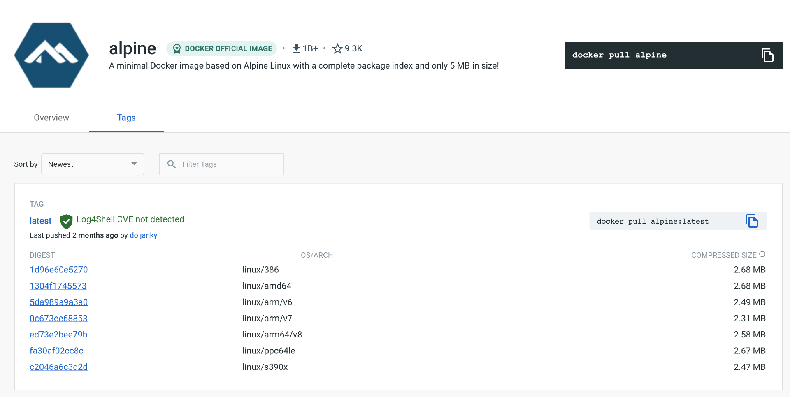
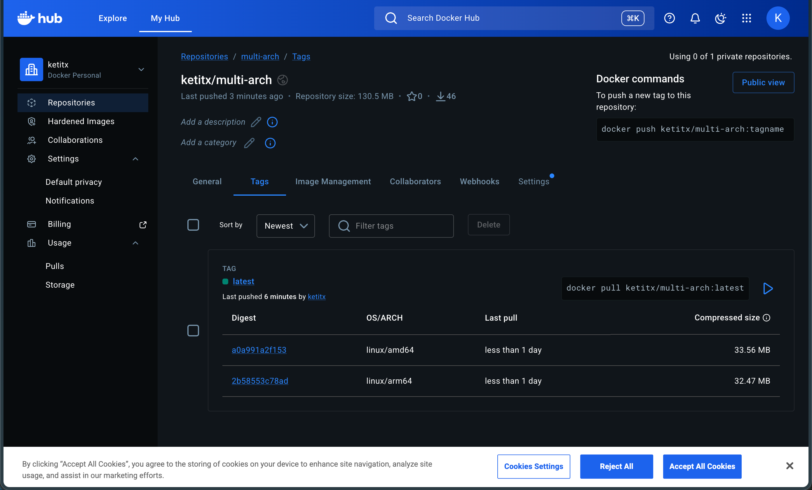
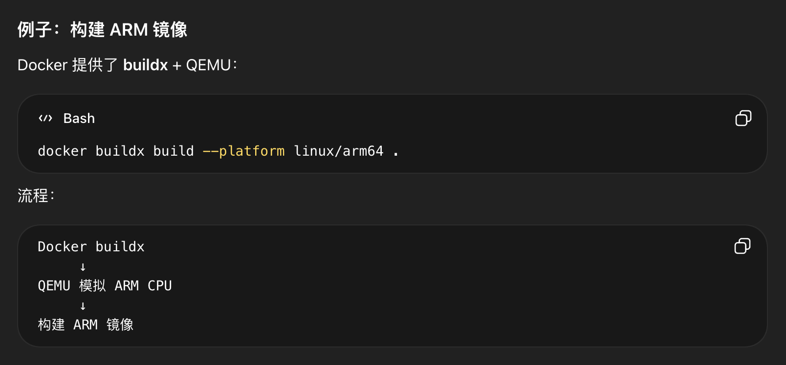

构建多平台镜像
在构建镜像时，Docker 会默认构建本机对应平台的镜像，例如常见的 AMD64 平台，这在大多数情况是适用的。
但是，当我们使用不同平台的设备尝试启动这个镜像时，可能会遇到下面的问题。
WARNING: The requested image's platform (linux/arm64/v8) does not match the detected host platform (linux/amd64) and no specific platform was requested
产生这个问题的原因是，构建和运行设备的 CPU 平台存在差异。在实际项目中，最典型的例子是构建镜像的计算机是 AMD64 架构，但运行镜像的机器是 ARM64。
要查看镜像适用于什么平台，你可以找到 DockerHub 镜像详情页。例如， Alpine 镜像适用的平台就可以在这个 链接 查看，详情页截图如下。

从这个页面我们可以看出，Apline 镜像适用的平台非常多，例如 Linux/386、Linux/amd64 等等。一般情况下，在构建镜像时，我们只会构建本机平台的镜像，但是当拉取镜像时，Docker 会自动拉取符合当前平台的镜像版本。
那么，怎么才能真正实现跨平台的 “一次构建，到处运行” 目标呢？Docker 为我们提供了构建多平台镜像的方法：buildx。
初始化
要使用 Buildx，首先需要创建构建器，你可以使用 docker buildx create 命令来创建它，并将其命名为 mybuilder。
docker buildx create --name multiarch-builder --driver docker-container --use
接下来，初始化构建器，这一步主要是启动 buildkit 容器。
docker buildx inspect --bootstrap
Name: multiarch-builder
Driver: docker-container
Last Activity: 2026-03-06 10:18:20 +0000 UTC
Nodes:
Name: multiarch-builder0
Endpoint: desktop-linux
Status: running
BuildKit daemon flags: --allow-insecure-entitlement=network.host
BuildKit version: v0.27.1
Platforms: linux/arm64, linux/amd64, linux/amd64/v2, linux/riscv64, linux/ppc64le, linux/s390x, linux/386, linux/arm/v7, linux/arm/v6
Labels:
org.mobyproject.buildkit.worker.executor: oci
org.mobyproject.buildkit.worker.hostname: 6845c9646220
org.mobyproject.buildkit.worker.network: host
org.mobyproject.buildkit.worker.oci.process-mode: sandbox
org.mobyproject.buildkit.worker.selinux.enabled: false
org.mobyproject.buildkit.worker.snapshotter: overlayfs
GC Policy rule#0:
All: false
Filters: type==source.local,type==exec.cachemount,type==source.git.checkout
Keep Duration: 48h0m0s
Max Used Space: 488.3MiB
GC Policy rule#1:
All: false
Keep Duration: 1440h0m0s
Reserved Space: 5.588GiB
Max Used Space: 43.77GiB
Min Free Space: 11.18GiB
GC Policy rule#2:
All: false
Reserved Space: 5.588GiB
Max Used Space: 43.77GiB
Min Free Space: 11.18GiB
GC Policy rule#3:
All: true
Reserved Space: 5.588GiB
Max Used Space: 43.77GiB
Min Free Space: 11.18GiB
初始化完成后，我们可以从返回结果中看到支持的平台，例如 Linux/amd64、Linux/arm64 等。
相比较单一平台的构建方法，在构建多平台镜像的时候，我们可以在 Dockerfile 内使用一些内置变量，例如 BUILDPLATFORM、TARGETOS 和 TARGETARCH，他们分别对应构建平台（例如 Linux/amd64）、系统（例如 Linux）和架构（例如 AMD64）。
# syntax=docker/dockerfile:1
FROM --platform=$BUILDPLATFORM golang:1.18 as build
ARG TARGETOS TARGETARCH
WORKDIR /opt/app
COPY go.* ./
RUN go mod download
COPY . .
RUN --mount=type=cache,target=/root/.cache/go-build \
GOOS=$TARGETOS GOARCH=$TARGETARCH go build -o /opt/app/example .
FROM ubuntu:latest
WORKDIR /opt/app
COPY --from=build /opt/app/example ./example
CMD ["/opt/app/example"]
这个 Dockerfile 包含两个构建阶段，第一个构建阶段是从第 2 行至第 9 行，第二个构建阶段是从第 11 行到第 14 行。
我们先看第一个构建阶段。
第 2 行 FROM 基础镜像增加了一个 --platform=$BUILDPLATFORM 参数，它代表“强制使用不同平台的基础镜像”，例如 Linux/amd64。在没有该参数配置的情况下，Docker 默认会使用构建平台（本机）对应架构的基础镜像。
第 3 行 ARG 声明了使用两个内置变量 TARGETOS 和 TARGETARCH，TARGETOS 代表系统，例如 Linux，TARGETARCH 则代表平台，例如 Amd64。这两个参数将会在 Golang 交叉编译时生成对应平台的二进制文件。
第 4 行 WORKDIR 声明了工作目录。
第 5 行的意思是通过 COPY 将 go.mod 和 go.sum 拷贝到镜像中，并在第 6 行使用 RUN 来运行 go mod download 下载依赖。这样，在这两个文件不变的前提下，Docker 将使用构建缓存来加快构建速度。
在下载完依赖之后，我们通过第 7 行把所有源码文件复制到镜像内。
第 8 行有两个含义，首先， --mount=type=cache,target=/root/.cache/go-build 的目的是告诉Docker 使用 Golang 构建缓存，加快镜像构建的速度。接下来，GOOS=TARGETOS GOARCH=TARGETARCH go build -o /opt/app/example . 代表的含义是 Golang 交叉编译。注意，$TARGETOS 和 $TARGETARCH 是我们提到的内置变量，在具体构建镜像的时候，Docker 会帮我们填充进去。
第二个构建阶段比较简单，主要是使用 ubuntu:latest 基础镜像，将第一个构建阶段生成的二进制文件复制到镜像内，然后指定镜像的启动命令。
接下来，我们就可以开始构建多平台镜像了。
在开始构建之前，先执行 docker login 登录到 DockerHub。
$ docker login
Username:
Password:
Login Succeeded
接下来，使用 docker buildx build 一次性构建多平台镜像。
$ docker buildx build --platform linux/amd64,linux/arm64 -t ketitx/multi-arch:latest --push .
在这个命令中，我们使用 --platform 参数指定了两个平台：Linux/amd64 和 Linux/arm64，同时 -t 参数指定了镜像的 Tag，而 --push 参数则代表构建完成后直接将镜像推送到 DockerHub。
还记得我们在 Dockerfile 第 2 行增加的 --platform=$BUILDPLATFORM 参数吗？当执行这条命令时，Docker 会分别使用 Amd64 和 Arm64 两个平台的 golang:1.18 镜像，并且在对应的镜像内执行编译过程。
执行完命令后，镜像会上传到 DockerHub 平台。进入这个镜像详情页我们就会发现它同时兼容了 Amd64 和 Arm64 两个平台。这样，多平台镜像就构建完成了。

一般情况下，多平台镜像并不常用，但如果你构建的镜像需要兼容不同的 CPU 平台，那就可以通过这种方法来实现。
结合相关资料，请你简单分享一下为什么我们能构建非本地平台的镜像呢？（提示：Docker QEMU。）
